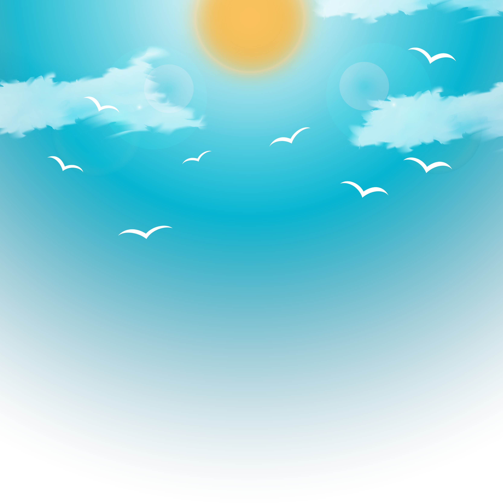

<ion-content style="--ion-background-color: #3B7E88">
  <div class="image">
    
  </div>
  <div class="text"> 
    <ion-button shape="round" size="small" [routerLink]="['/home']">Začít</ion-button>
  </div>
</ion-content>
